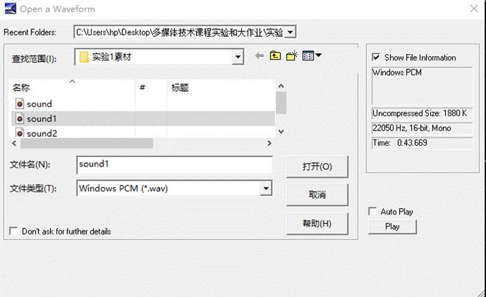
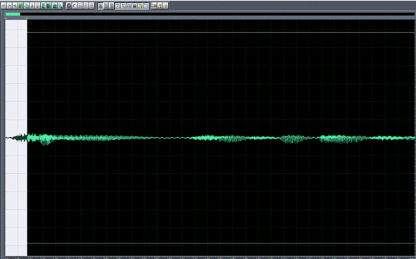
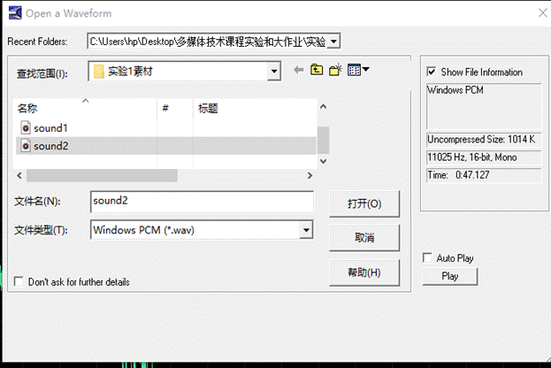
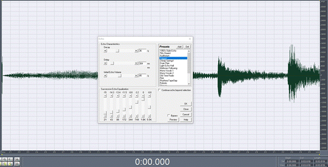
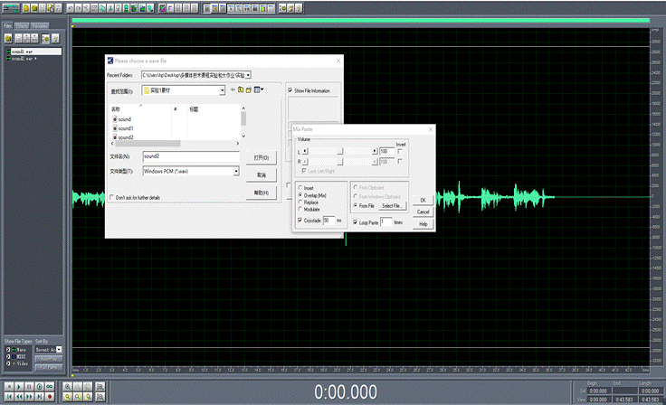

实验一
通过实际操作了解并学会音频的剪辑与多媒体软件cool eiditor pro的使用方法，利用所给的素材文件根据提示步骤完成一有背景音乐的作品。
实验目的
(1)学会通过麦克风录制一段语音信号。
(2)学会通过线性输入录制一段音乐信号作为背景音乐。
(3)学会编辑音频，如剪切、混合粘贴等。
(4)学会制作特殊效果，如增加回声等。
实验内容
(1)硬件准备。在计算机中要进行音频的录制或播放必须依靠声卡的支持。录制音频信号除需使用声卡外，还要有麦克风或其他音频信号设备(如录放机、CD唱机)；播放音频还需配备音箱。
(2)麦克风录制一段语音。使用Windows操作系统附带的录音机软件或使用Cool Edit 2000录制一段解说词声音。（替代素材中的sound1，录制30秒，个人介绍，第一句说自己名字，我叫XXX........,需要做去噪声处理）
(3)用CD唱机录制一段音乐。使用Cool Edit 2000软件从CD唱机录制一段音乐，将作为解说词的配乐。(可以直接用素材中的sound2)
(4)使用Cool Edit 2000编辑音频。对解说词音频文件进行剪辑，剪掉开头无用的部分；将解说词和音乐文件进行混音处理，编辑成一个配乐解说音频文件。（录制的sound1和sound2混音为sound，替代素材中原来的sound）.
实验方法及步骤
1.使用CoolEdit 2000编辑soundl wav文件
剪辑录音解说词文件soundl.wav，步骤如下：
- 执行File--Open命令.打开soundl.wav文件。

(2)观察音频波形，前面有较长一段空白，用鼠标单击并拖拽选定该区域呈高亮显示.如图E1.5所示。
按键盘上的Delete键或执行Edit→Delete selection命令删除选定区域

(4)执行File→Save命令保存该文件。
2.使用Cool Edit 2000编辑sound2.wav文件
为音乐文件sound2.wav增加动听的山谷回声效果。
(l)打开sound2.wav文件。

(2)执行Effects→Delay Effects→Echo命令，在弹出的对话框中进行如图El.6所示的设置，然后单击OK按钮。
(3)执行File→Save命令保存文件。
2.使用CoolEdit 2000进行混音处理
对soundl文件和sound2文件进行混音，生成配乐诗朗诵音乐。
(1)打开soundl文件。
(2)执行Edit→Mix Paste命令，出现如图El.7所示的对话框。

图E1.7
(3)在对话框中，设置被粘贴文件的音量Volume L和R为100，在混合方式框中选择Overlap，激活Crossfade选项输入时间为50ms，在被粘贴数据来源框中选择FromFile，单击Select File按钮选择sound2文件，指定Looppaste为1次，单击OK完成按钮。

(4)执行File→SaveAs命令，文件名存为sound3，单击OK按钮，完成混音处理。
*或者将两段音频放在多音轨中，编辑-->混缩到其他音轨上，然后编辑保存。